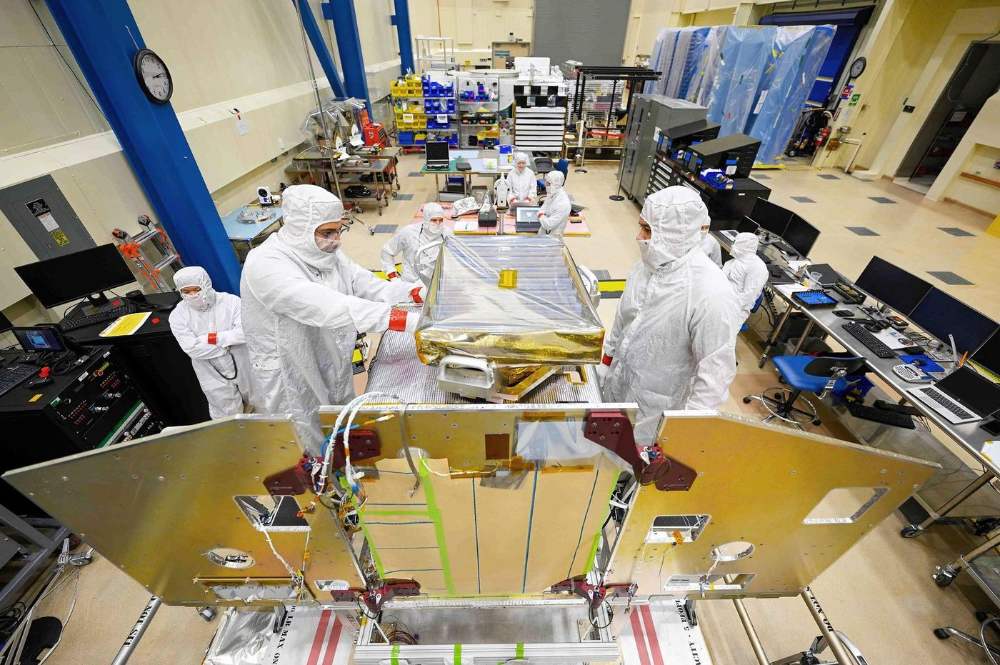

We build flight hardware that works the first time.
We design, fabricate, test, and validate the electronics and mechanical hardware that fly. From rapid prototyping to full flight production, we deliver in our own facilities, under our own quality system, with cleared people who build for missions that cannot fail.
From prototype to flight production.
We manufacture the flight hardware that missions depend on, end to end, from rapid prototyping through full flight production. We carry a board or a part from first concept to qualified, deliverable hardware inside our own facilities.
We run a 32,000 sq ft electronics manufacturing facility and a 10,000 sq ft machine shop under two miles from NASA Goddard. We design, source, fabricate, test, and validate printed circuit boards. We machine and print precision mechanical parts and assemblies to recognized aerospace standards. We do it with cleared personnel on an ESD-protected floor, under clean-room discipline.
We serve the agencies and programs that build spacecraft, instruments, and ground systems, from defense and national security to federal civilian science. When a mission needs hardware it can trust, we build it, prove it, and deliver it.
Two floors, one flight-ready pipeline.
We pair an electronics manufacturing facility with a precision machine shop, so a single source carries flight hardware from circuit and part design through qualified, deliverable assemblies.
Printed circuit boards, end to end
We deliver flight-grade electronics across the full cycle: PCB design, sourcing, fabrication, testing, and validation. We build in a 32,000 sq ft electronics manufacturing facility equipped for the work that has to fly.
Intricate board repairs
We perform intricate FPGA board repairs on state-of-the-art equipment. When a board is too critical to scrap, we recover it with the precision the mission requires.
Mechanical parts and assemblies
We machine mechanical parts and assemblies to Mil-I-45208A and Mil-std-45662 compliance in a 10,000 sq ft shop, with four CNC machines plus manual lathes, presses, and mills, run by six certified aerospace machinists.
From idea to first article
We move fast from concept to hardware with seven 3D printing machines for rapid prototyping, so designs are proven in physical form before they commit to production.
Clean-room verification
We operate three clean rooms for independent customer testing, validation, and verification, so hardware is proven against requirements before it ships.
Prototype to flight production
We carry hardware across the full span, from rapid prototyping to full flight production, under one quality system, in our own facilities, with our own cleared people.
Facilities built to flight standard.
We manufacture in secure, purpose-built facilities held to aerospace compliance, sited beside the agencies we serve. The proof is in the floor where the hardware is made.
32,000 sq ft, secure and ESD-protected
We design, source, fabricate, test, and validate printed circuit boards in a 32,000 sq ft electronics manufacturing facility. It is a secure facility staffed by cleared personnel, with an ESD-protected manufacturing floor and state-of-the-art equipment for intricate FPGA board repairs. Three clean rooms support independent customer testing, validation, and verification.
10,000 sq ft, under two miles from NASA Goddard
We machine mechanical parts and assemblies in a 10,000 sq ft shop sited under two miles from NASA Goddard, compliant with Mil-I-45208A and Mil-std-45662. Four CNC machines plus manual lathes, presses, and mills run alongside seven 3D printing machines for rapid prototyping, worked by six certified aerospace machinists.

NASA / Goddard Space Flight CenterTwo subsidiaries, one source.
We deliver satellite and space systems manufacturing through SSAI's subsidiaries, Advanced Mission Partners and Sigma Engineering and Fabrication, so a single trusted source spans electronics and precision machining.
Advanced Mission Partners
Delivers electronics manufacturing, engineering services, EEE expertise, and precision manufacturing, including the 32,000 sq ft electronics facility, PCB work, FPGA repair, and clean-room verification.
Sigma Engineering and Fabrication, Inc.
Delivers precision machining, manufacturing, and material expertise, engineered to work the first time, including the 10,000 sq ft machine shop, CNC and manual machining, and rapid prototyping.
Built for every mission space.
We manufacture flight hardware for the agencies and programs that build and field space and defense systems, across all six markets we serve.
The full span of mission capability.
Satellite and space systems manufacturing is one of five capabilities we field across six markets. Explore the rest of what we deliver.
Science, Technology & Engineering
We engineer the instruments and systems that have to work the first time.
Explore →Space Operations
We keep the mission running, from pre-launch through on-orbit.
Explore →Environmental Intelligence
We turn what sensors see into decisions the mission can act on.
Explore →Cybersecurity & Digital Defense
We secure the mission and accelerate the decision.
Explore →Hardware that works the first time, and every time.
When the mission cannot fail, the hardware has to be right. We build, prove, and deliver flight electronics and precision parts in our own secure facilities. Bring us the requirement.